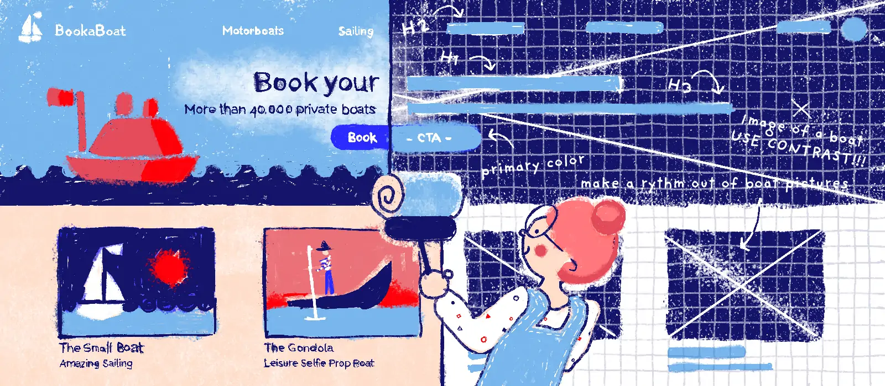

Práctica: Diseño web cliente II
A la hora de diseñar una página, antes de meter código, es más que recomendable hacer un prototipo (cómo se vería), útil para mostrar la disposición de los elementos a otros miembros del equipo y para presentalo al cliente.
Hay frameworks de diseño que facilitan el trabajo de generar el código html y de estilos, como son Bootstrap y Materialize.
Diseño visual de la web de horticultura ornamental Cuando plantares.
Landing page con Bootstrap y Materialize.